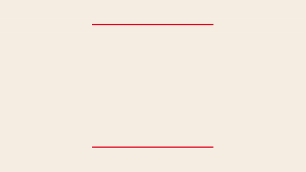
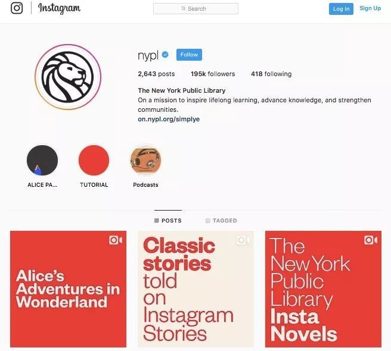
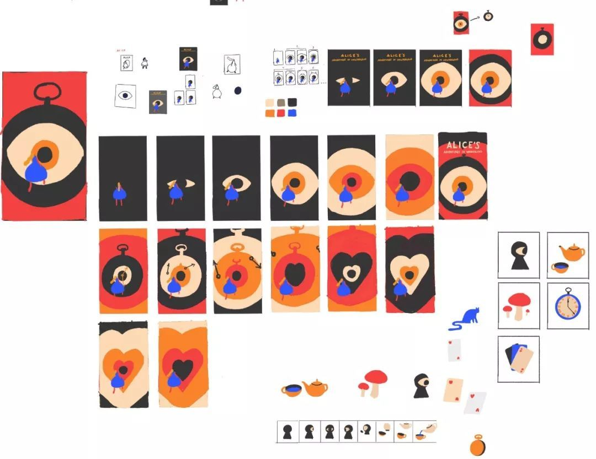
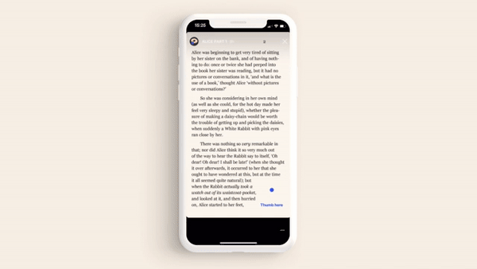
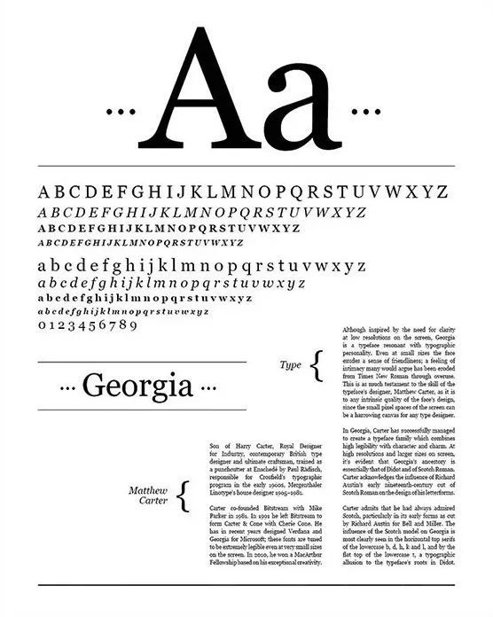
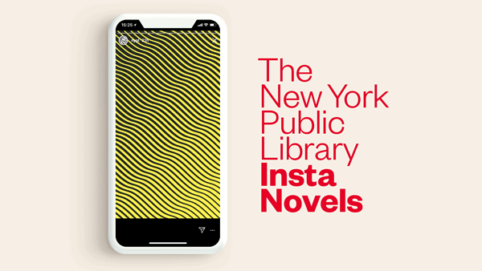
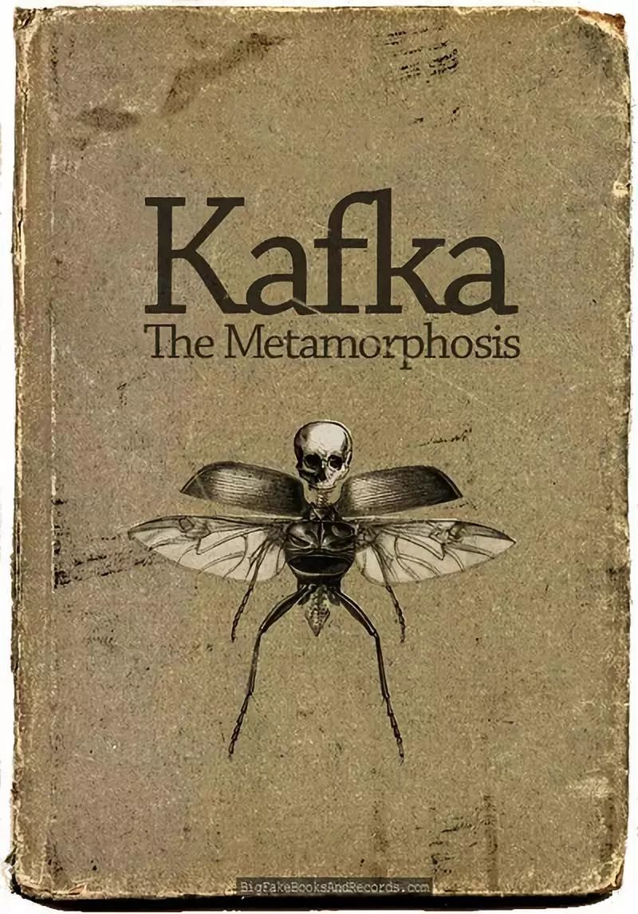
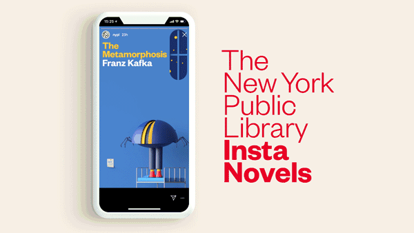
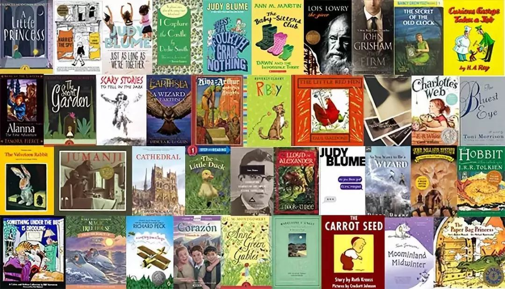

承认吧，我们不看书了。
尽管如今推销图书的方式无奇不有，可无论是附送五花八门的赠品，还是知名设计师操刀的封面，甚至是打上了超限量（到底是真限量还是根本没印那么多 🤭）的编号，一年到头也骗不了你花钱买两本书。什么，你说电子书？就别提有多少人的 Kindle 拿去盖泡面了吧 🍜。
我们的时间都花在社交媒体上了——碎片化阅读（如果能称之为阅读的话）能让你读到了一丁点儿茶余饭后的谈资，还是让你的大脑被信息量挤到爆炸？你到底有多久没有好好看完一本书了？
纽约公共图书馆（NYPL）为了让我们看本书，可花了不少心思。既然我们只愿意刷手机，它就把世界名著拆解成一张张图片，推送到我们面前。行吧，我们就来看看它到底使出了什么招数。
NYPL 在代表速食文化的 Instagram 上，做了件看似「背道而驰」的事，他们推出了 #InstaNovels（Insta 小说）计划，让我们用刷图的时间读完一本书。
这才不是什么 Instagram 与 NYPL 合作的特别项目，而是聪明的 NYPL 运用 Instagram 的功能，想出了让我们在社交媒体上看书的妙招。
它把经过数字化的图书变成一张张图片，没有「循规蹈矩」使用一般张贴图片的方式发布，而是选择发布在界面顶端更为抢眼的 Stories 限时动态。
原本发布 24 小时后即自动消失的 Stories，最近有了 Highlight 功能，点开某个账号页面，就能看到之前发布过的 Stories 被归档到头像下方，以圆圈的方式呈现，如此一来也比正方形的图片更让人有点击欲望。
NYPL 顺手把 Highlight 功能当作「书架」来用，把发布过的图片统统集合起来，方便读者随时再打开阅读。还真没想到这个以看图出名的平台，竟然可以变成一个可以看书的地方。
我们对《爱丽丝梦游仙境》的故事耳熟能详，却没有多少人真的读过这本由数学家 Lewis Carroll 在 1865 年出版的小说。
现在打开 NYPL 的 Instagram 页面，你就可以看到，《爱丽丝梦游仙境》变成了圆圈停留在界面上方，正等着你去翻阅。
可是白纸黑字的电子书是不会有人理睬的，那么这本「古董书」如何诱惑我们点进去呢？和 NYPL 合作的独立创意公司 Mother New York，从 Instagram 上找寻最能吸引注意力的新颖视觉，相中大受欢迎的设计师 Magoz（@magoz）。
印象中传统的爱丽丝经他之手，变成了现代风的穿着蓝色裙子的金发女孩，一步步走向前方的奇妙圈圈。
别以为设计师只是画个封面就好了，这回 Magoz 可是为《爱丽丝梦游仙境》创作了整套视觉，包括封面动画、各个章节的封面和书中的小部件等等。
Magoz 还透露，他从《爱丽丝梦游仙境》中找到许多灵感，小说当中对超现实画面的描写栩栩如生，超乎逻辑的想象力诞生出比例夸张的变形生物，与 Magoz 的创作风格一拍即合。
为了让自己沉浸在异想世界，他在创作期间反复听着 Jefferson Airplane 的名曲《White Rabbit》，这首迷幻之歌的灵感正是来自《爱丽丝梦游仙境》。
Magoz 透过插画，将永远充满好奇心的爱丽丝重新呈现在我们眼前，再次提醒我们，只要鼓起勇气张开怀抱，那么你将会打开一个超乎想象的奇妙世界。NYPL 选择这本书打头阵，或许也是想为当今的「厌世代」打打气呢。
用过 Stories 功能的朋友都知道，每张图片上方都有进度条，会自行翻页，而即便你有一目十行的超能力，也很难在进度条跑完的短短几秒钟看完一页书。
因此，Insta 小说特别在页面的右下角设计了一个翻页小按键，把你的拇指放在上面即可停留阅读，轻轻点一下则是翻页，这样读者就可以自己控制阅读的节奏啦。
还有一个彩蛋，只有认真读完整本书的人才能发现！那就是这些小图形快速翻动起来就像连环画一样，变成了俏皮的小动画。在阅读过程中，你可以看到这个小按键从圆点 🔵 变成了眼睛 👁️，又从蘑菇 🍄 变成了扑克牌 🃏。
想到在屏幕上看那么多字，不免让人觉得有点吃力，Insta 小说当然有考虑到这点，因此，特别在更便于屏幕阅读的暖白底色上，选择了 Georgia 字体。
这款衬线字体是由字体设计师 Matthew Carter 在 1993 年为微软设计的，Matthew Carter 有多厉害呢，随便翻开一本书（哦不，你不看书）……那么随便打开一个网站，你看到的很有可能就是他设计的字体。
Georgia 字体诞生在数字时代的开端，它的设计初衷正是为了方便在屏幕上阅读，即便是小字号也能清晰辨认，怪不得它是 Insta 小说字体的绝佳选择呢。
是不是用吸引人的视觉把我们骗进来之后，只有白纸黑字的篇章？才不是呢，当阅读过程中出现 Animated Page 的提醒，便代表可以与之互动的段落将在下一页出现。
有的段落只要你抬起拇指，便会接二连三地轻巧跃出；有的段落有如缭绕的思绪，弯弯曲曲地溜出一串文字。如果没有认真读下去，这些有趣的小细节你可就统统错过咯。
如此有心的设计，还真让人有继续看下去的动力了呢。看完前面提到的《爱丽丝梦游仙境》，如果觉得不够过瘾，那么还有两本即将推出的 Insta 小说值得我们期待。
一是小说家 Charlotte Perkins Gilman 的代表作《黄壁纸》。它以悬疑小说的外在包裹着女性独立的核心，在保守的 1892 年一经出版便引起激烈讨论，至今仍是备受推崇的性别教育读物，不难理解 NYPL 为什么会在当下选择这本书。
而负责设计的是风格多元的设计公司 Buck（@buck_design），尽管他们以往也有十分俏皮的作品，但这次为了契合《黄壁纸》的基调，选择了比较抽象的设计。
另一本则是小说家 Franz Kafka 于 1915 年发表的经典之作《变形记》。小学课本上的节选你还记得吧？接手这本小说的是设计师 César Pelizer（@cesarpelizer），从预告片段可以看到，他将我们阅读时想象出来的毛骨悚然的「变形人」，转化成了非常逗趣的形象。
这次 #InstaNovels 计划，不仅改变了我们对流行社交媒体的看法，也重塑了我们接触经典文学的方式，这不也是另一种角度的《变形记》吗？
作为世界著名图书馆之一，NYPL 还真的挺会玩。它向来以各种珍稀收藏而闻名，包括哥伦布 1493 年发现新大陆的信函、经典爵士歌曲《Lover Man》的手写乐谱和诸多大作家的私人物件……
自从推出 #InstaNovels 计划以后，NYPL 的 Instagram 关注人数更得到了前所未有的增长。当然，更重要的是，已经有超过 4 万人读完第一本 Insta 小说啦 👏。
如果你想从 NYPL 借书，第一个条件就是你得住在美国，才能去办借书证（残念……）。可现在，只要登录 Instagram，你就可以马上读到 Insta 小说。
除此之外，NYPL 还提供了免费的电子书 app「SimplyE」，方便读者痛快阅读更多电子藏书。另外，它还找来作家、艺术家做 Podcast，常常给大家推荐好书。
哎呀，NYPL 真是动了不少脑筋呢，可你说它讨好新世代也好，想赶趟时髦也好，总之就是为了让大家看本书，这不就是一个图书馆应该做的嘛。一百多年来它都在为纽约市民免费提供阅读，现在更希望接触到世界的角角落落，不由得让人有点感动！
其实读书也没别的，有时候只是单纯觉得一口气读完一本书很爽。